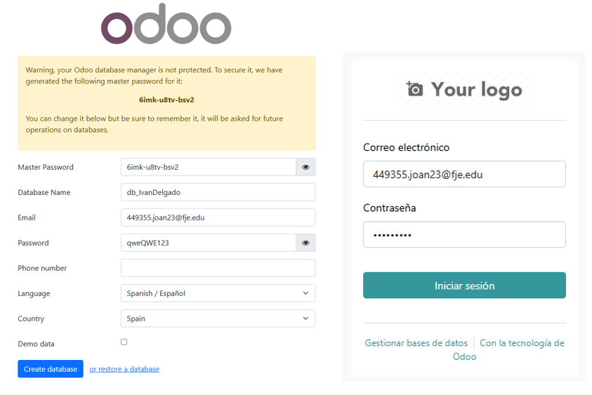
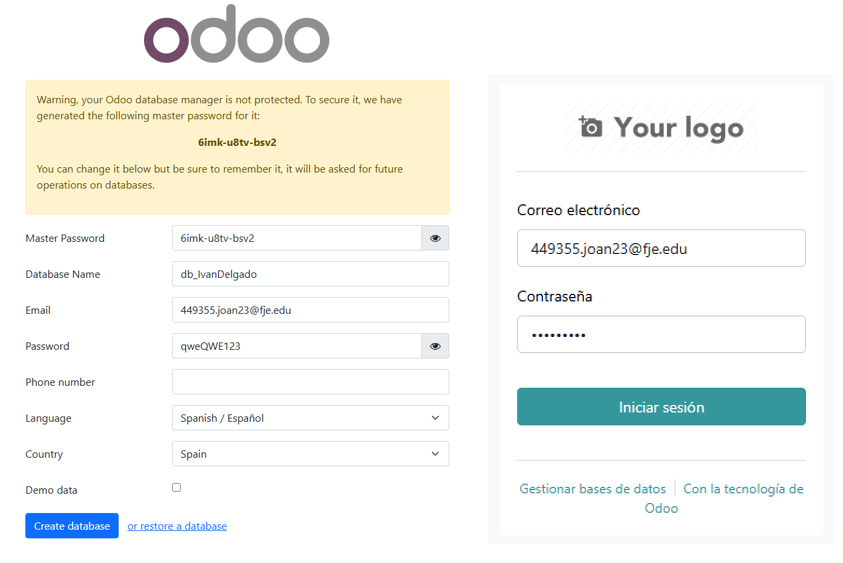

Configuracion de la BBDD
Paso 1:Credenciales
se nos abrirá una pestaña (img de la derecha), simplemente rellenaremos los datos que se nos solicite (hay que marcar la casilla de "Demo data", para asi tener una demo) y le daremos a "Create database". En la imagen de la izquierda simplemente iniciaremos sesion.
 
